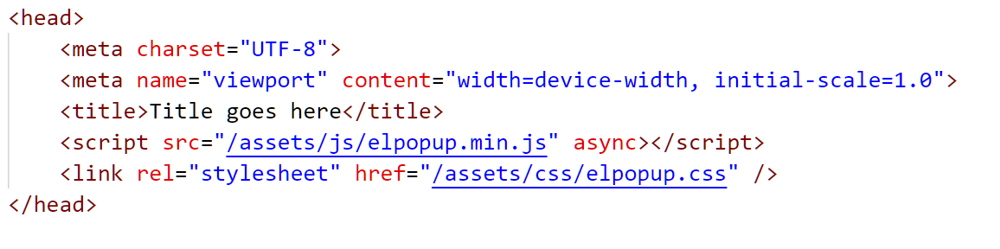

Created: 11/05/2024
By: Syed Mohammad Talha
Email: smtalha582@gmail.com
Thank you for purchasing my plugin. If you have any questions that are beyond the scope of this help file, please feel free to email via my user page contact form here. Thanks so much!
There is no requirement of adding code in between your HTML body. You just need to include the stylesheet and javascript file as shown in the image below.
If the stylesheet doesn't reflect styles, make sure there is no style overriding the style in elpopup.css.
Code which powers this plugin lies in the elpopup.min.js file.
Best part of this script is that it doesn't rely on any additional 3rd party script like jQuery. This file contains all the keyframes which are responsible for the animations involved.In order to create a Popup element, the following code has to be added to your main javascript file or in between script tags in your HTML file, as shown below.
window.onload = () => {
new PopupElement({
element: 'popup', content: {
"header_text": "Header Text goes here",
"body_text": "Content in body goes here"
}, settings: {
colors: {
"main_bg": '#ffffff',
"accent_color_primary": '#2d52a9',
"accent_color_secondary": '#d9d9d9',
"accent_color_light": '#666666',
"header_font_color": '#ffffff',
"content_color": '#3e3d3d',
"snackbar_content_color": '#ffe7e7',
"snackbar_content_bg": '#2d2929',
"button_accent_color": '#83ffb3',
"toast_bg": '#2d2929'
}, animation: {
enter: 'scale',
exit: 'scale',
speed: 'medium'
},
rounded_container: true,
placement: 'TOP_LEFT',
icon: "fa-check",
callback_success: () => {
// whatever you want to do if the popup was confirmed
},
callback_cancel: () => {
// whatever you want to do if the popup was cancelled
}
}
});
}
Class "PopupElement"
PopupElement class is the main class of this plugin. You need to create an instance of this class in order to fire a popup. It returns a promise that you need to handle with a success and error callback respectively (as explained in the subsequent points).
new PopupElement({element:"", settings:{}, content:{}})
.then(success_data => {console.log(success_data)})
.catch(err=>console.log(err));
"success_data" returned in the promise can be one of the following objects depending on the
element type (as explained in next point).
If element is not a "snack-bar",
{
"confirmed":true
}
If element is a "snack-bar",
{
"dismissed":true
}
"confirmed"
indicates whether the user has clicked on "Yes" in the popup that you showed. If the user clicks
on "No"/"Cancel", "confirmed" is returned as false.
"dismissed" indicates whether the user tapped/clicked on the snackbar in order to close it.
These parameters are responsible for giving your popup the look and feel you wantm as well as the content that goes inside them. Following is a breakdown of these parameters.
| Parameter | Description | Type | Possible values |
|---|---|---|---|
| element | refers to the popup type that you want | String | "popup", "snack-bar", "toast", "cookie-bar" |
| settings | 15+ configurations for your popup | JSON Object | It takes an object of parameters and values for different configurations like background, font color, rounded borders, callbacks etc. A detailed discussion of these is in the next section. |
| content | the content which goes inside your popup | JSON Object |
Parameter header_text: Text which goes in popup header. Parameter body_text: Text which goes in popup body/content. Parameter sb_expand_btn_text: Expand button label (default is "Show". This is for snackbars only). Parameter primary_btn_text: Primary button label (default is "Yes"). Parameter secondary_btn_text: Secondary button label (default is "No"). Please note, "header_text" is ignored in case of "toast" element. |
Please refer to the following table for all possible configurations.
| Parameter | Description | Type | Possible values |
|---|---|---|---|
| rounded_btn | rounded borders for popup buttons | Boolean | true or false |
| rounded_container | rounded borders for popup container | Boolean | true or false |
| animation | set animation for the popup. | JSON Object |
Parameter enter: Enter animation ("slide_up", "slide_down" or "scale") Parameter exit: Exit animation ("slide_up", "slide_down" or "scale") Parameter speed: Speed of animation ("slow", "medium", "quick", "instant") |
| placement | Position of the popup on page | String | TOP_LEFT, TOP_RIGHT, BOTTOM_LEFT, BOTTOM_RIGHT, CENTER, TOP_CENTER, BOTTOM_CENTER |
| callback_success | This function will be executed if the user confirms the popup.(Clicks on "Yes" for example) | function | Any function that you want should be executed on confirmation |
| callback_cancel | This function will be executed if the user cancels/dismisses the popup.(Clicks on "No" for example) | function | Any function that you want should be executed on cancellation |
| colors | Specify colors for different components of the popup | JSON Object |
main_bg: background color of the popup content accent_color_primary: primary color for header, buttons etc. accent_color_secondary: secondary color for hover font colors etc. accent_color_light: secondary color for inactive/out-of-focus buttons etc. header_font_color: font color for header text snackbar_content_color: font color for content text of snackbar snackbar_content_bg: background color of the snackbar content snackbar_highlight_content_bg: background color of the active snackbar content snackbar_highlight_content_color: font color of the content text of active snackbar button_accent_color: font color of the snackbar action button toast_bg: background color of the toast content |
| snackbar_active | Only for snackbars. If you want to highlight a snackbar to make it look different from other snackbars. A priority snackbar for example. | Boolean | true or false |
| icon | Only for snackbars currently.If you want to show a small icon at the start of snackbar. | String | Any font awesome class like "fa-bell" |
I've used the following images, icons or other files as listed. Everything else is from scratch and not copied from anywhere.
The link to demo of this plugin with code generation- https://symtalha14.github.io/element-popup/
Once again, thank you so much for purchasing this plugin. As I said at the beginning, I'd be glad to help you if you have any questions relating to this theme. No guarantees, but I'll do my best to assist. If you have a more general question relating to the themes on ThemeForest, you might consider visiting the forums and asking your question in the "Item Discussion" section.
Syed Mohammad Talha